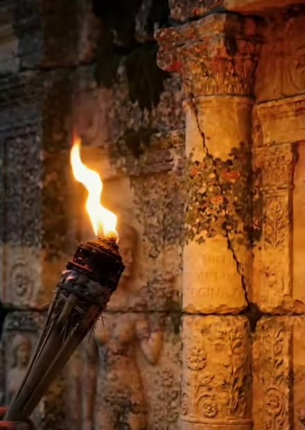
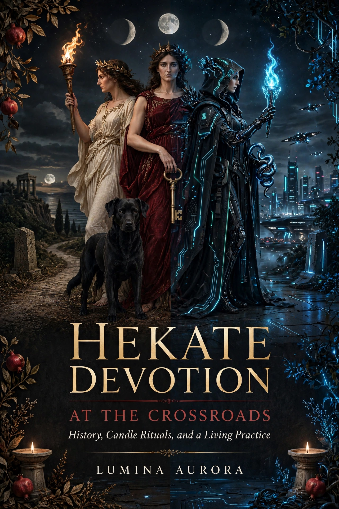

Eclectic witch & spiritualist · Hekate devotee · Espiritismo · Tarot · Lunar magick · Ritual
As above, so belowLumina Aurora is a devotional teaching practice built around Hekate — goddess of the crossroads, keeper of keys, bearer of torches. Here, her story is told the way the sources tell it: ancient sanctuaries, household offerings, sacred thresholds, and torches held through the darkness.
Educator by day, witch by night: Lumina holds a doctorate and brings a researcher's discipline to the Craft. Everything taught here is curated from the sources and scholarship — not the scroll.
Learning her history is another way to honor her. Whether you're a baby witch taking a first step or a devotee who has walked with her for years, you're welcome at this threshold — with curiosity, discernment, and a light of your own.


History, Candle Rituals, and a Living Practice
Releasing October 31, 2026 · Samhain
Meet Hekate through ancient testimony, thoughtful study, and a devotion that fits an ordinary life.
Explore torches, keys, thresholds, Deipnon, candle practice, ancestral remembrance, and original prayers. Chapters on imposter feelings and AI offer contemporary ways to deepen study and make room for devotion.
An illustrated handbook for returning to the threshold with curiosity, discernment, and a light of your own.
Who Hekate was before the internet decided who she is — sanctuaries, epithets, and the written record, read with care.
The monthly supper of Hekate: clearing the household, honoring the threshold, taking out the trash — spiritually and literally.
Torchlight brought down to the altar. Candle work, wax reading, and flame as devotion in an ordinary life.
Reading at the crossroads: tarot as study and mirror, and working with the moon's phases through the month.
Spiritualist tradition and ancestral remembrance — keeping faith with those who walked before us.
First steps taken honestly. No gatekeeping, no shortcuts — knowledge, discernment, and devotion grown slowly.
New videos on Hekate's history, ritual, and living devotion — come learn with us.
@luminaaurora4